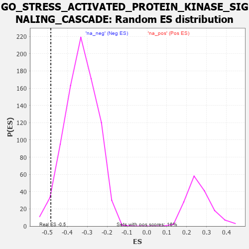

| | | Dataset | 7d |
| Phenotype | NoPhenotypeAvailable |
| Upregulated in class | na_neg |
| GeneSet | GO_STRESS_ACTIVATED_PROTEIN_KINASE_SIGNALING_CASCADE |
| Enrichment Score (ES) | -0.48351914 |
| Normalized Enrichment Score (NES) | -1.4541097 |
| Nominal p-value | 0.026097272 |
| FDR q-value | 0.23955558 |
| FWER p-Value | 1.0 |
Table: GSEA Results Summary
 Fig 1: Enrichment plot: GO_STRESS_ACTIVATED_PROTEIN_KINASE_SIGNALING_CASCADE
Fig 1: Enrichment plot: GO_STRESS_ACTIVATED_PROTEIN_KINASE_SIGNALING_CASCADE
Profile of the Running ES Score & Positions of GeneSet Members on the Rank Ordered List
| PROBE | GENE SYMBOL | GENE_TITLE | RANK IN GENE LIST | RANK METRIC SCORE | RUNNING ES | CORE ENRICHMENT | | 1 | AXIN1 | | | 166 | 1.159 | 0.0089 | No |
| 2 | WNT16 | | | 198 | 1.072 | 0.0327 | No |
| 3 | HGF | | | 276 | 0.870 | 0.0454 | No |
| 4 | PKN1 | | | 535 | 0.619 | 0.0287 | No |
| 5 | IGBP1 | | | 869 | 0.514 | -0.0001 | No |
| 6 | PDCD4 | | | 941 | 0.497 | 0.0038 | No |
| 7 | DVL3 | | | 971 | 0.490 | 0.0127 | No |
| 8 | MEN1 | | | 1003 | 0.483 | 0.0213 | No |
| 9 | AKT1 | | | 1040 | 0.476 | 0.0290 | No |
| 10 | FZD10 | | | 1065 | 0.470 | 0.0381 | No |
| 11 | KAT7 | | | 1240 | 0.440 | 0.0275 | No |
| 12 | PAK3 | | | 1889 | 0.322 | -0.0461 | No |
| 13 | HACD3 | | | 1932 | 0.315 | -0.0433 | No |
| 14 | SYK | | | 2186 | 0.278 | -0.0681 | No |
| 15 | HIPK2 | | | 2389 | 0.247 | -0.0873 | No |
| 16 | EMC10 | | | 2607 | 0.211 | -0.1092 | No |
| 17 | SASH1 | | | 2682 | 0.201 | -0.1134 | No |
| 18 | CUL1 | | | 2735 | 0.193 | -0.1150 | No |
| 19 | ULK4 | | | 3022 | 0.146 | -0.1474 | No |
| 20 | ERN2 | | | 3160 | 0.129 | -0.1614 | No |
| 21 | TAB1 | | | 3351 | 0.097 | -0.1829 | No |
| 22 | HDAC3 | | | 3528 | 0.072 | -0.2033 | No |
| 23 | MAPK3 | | | 3589 | 0.062 | -0.2092 | No |
| 24 | STK25 | | | 3602 | 0.059 | -0.2092 | No |
| 25 | SKP1 | | | 3663 | 0.049 | -0.2155 | No |
| 26 | DAXX | | | 3722 | 0.038 | -0.2219 | No |
| 27 | CCM2 | | | 3933 | 0.005 | -0.2483 | No |
| 28 | NCOR1 | | | 3961 | 0.000 | -0.2517 | No |
| 29 | IGF1R | | | 3970 | -0.002 | -0.2527 | No |
| 30 | SFRP2 | | | 4065 | -0.018 | -0.2641 | No |
| 31 | TRAF1 | | | 4104 | -0.024 | -0.2683 | No |
| 32 | ERCC6 | | | 4464 | -0.087 | -0.3114 | No |
| 33 | TNIK | | | 4804 | -0.158 | -0.3502 | No |
| 34 | TAOK3 | | | 4823 | -0.162 | -0.3482 | No |
| 35 | DLG1 | | | 4860 | -0.169 | -0.3484 | No |
| 36 | FZD4 | | | 4940 | -0.186 | -0.3536 | No |
| 37 | EPHA4 | | | 5273 | -0.265 | -0.3887 | No |
| 38 | FZD5 | | | 5386 | -0.292 | -0.3953 | No |
| 39 | SPHK1 | | | 5576 | -0.339 | -0.4105 | No |
| 40 | ROR2 | | | 5626 | -0.353 | -0.4076 | No |
| 41 | FZD8 | | | 6051 | -0.490 | -0.4485 | No |
| 42 | DBNL | | | 6084 | -0.501 | -0.4397 | No |
| 43 | UBB | | | 6090 | -0.503 | -0.4273 | No |
| 44 | STK4 | | | 6145 | -0.518 | -0.4208 | No |
| 45 | CDC42 | | | 6236 | -0.548 | -0.4180 | No |
| 46 | UBE2N | | | 6407 | -0.621 | -0.4235 | No |
| 47 | TRPV4 | | | 6515 | -0.668 | -0.4198 | No |
| 48 | PAK1 | | | 6691 | -0.757 | -0.4224 | No |
| 49 | EGFR | | | 6708 | -0.765 | -0.4047 | No |
| 50 | CYLD | | | 7333 | -1.206 | -0.4524 | Yes |
| 51 | UBC | | | 7410 | -1.274 | -0.4292 | Yes |
| 52 | GRIK2 | | | 7552 | -1.471 | -0.4090 | Yes |
| 53 | TRAF4 | | | 7573 | -1.514 | -0.3725 | Yes |
| 54 | TRAF6 | | | 7818 | -2.157 | -0.3477 | Yes |
| 55 | TRAF2 | | | 7861 | -2.481 | -0.2890 | Yes |
| 56 | TRAF3 | | | 7886 | -2.695 | -0.2225 | Yes |
| 57 | CAV3 | | | 7896 | -2.739 | -0.1530 | Yes |
| 58 | PLCB1 | | | 7904 | -2.841 | -0.0806 | Yes |
| 59 | TRAF5 | | | 7938 | -3.448 | 0.0042 | Yes |
Table: GSEA details [plain text format]

Fig 2: GO_STRESS_ACTIVATED_PROTEIN_KINASE_SIGNALING_CASCADE: Random ES distribution
Gene set null distribution of ES for GO_STRESS_ACTIVATED_PROTEIN_KINASE_SIGNALING_CASCADE